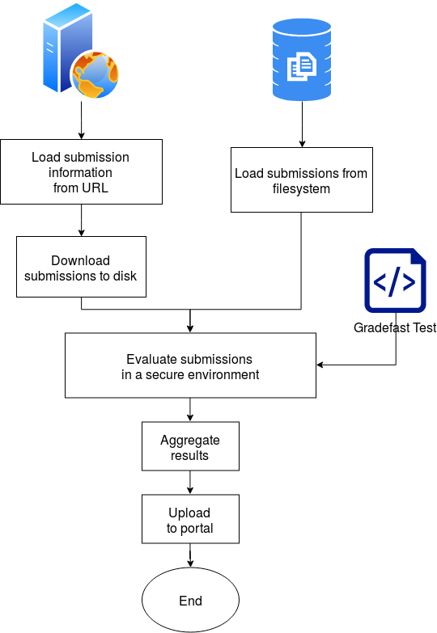

What is Gradefast?¶
Gradefast is a python framework that lets you evaluate a batch of programming assignments on your computer. The assignments need not necessarily be in python. It also provides utilities to download, extract, and upload results back to a web portal.
The complexity of assignments can vary from simple programming assignments like implementantion of quicksort to implementation of PID controller of a drone in ROS-VREP. The framework requires you to return only a result dictionary, feedback as comment and
{kind=link}
Core features¶
Downloading submission files from web portal to your computer
Automatic unzipping of downloaded zips
Running a test script on each submission that returns a result
Aggregation of results
Uploading results back to portal
Useful utilities¶
Timing all execution
Logging of output and exceptions for review
Serialization of important data like submission and result
Analysis (read EDA) of results [todo]
Adding memory limits [todo]
Checkpointing [todo]
Security of environment [todo]
Plagiarism check [todo]